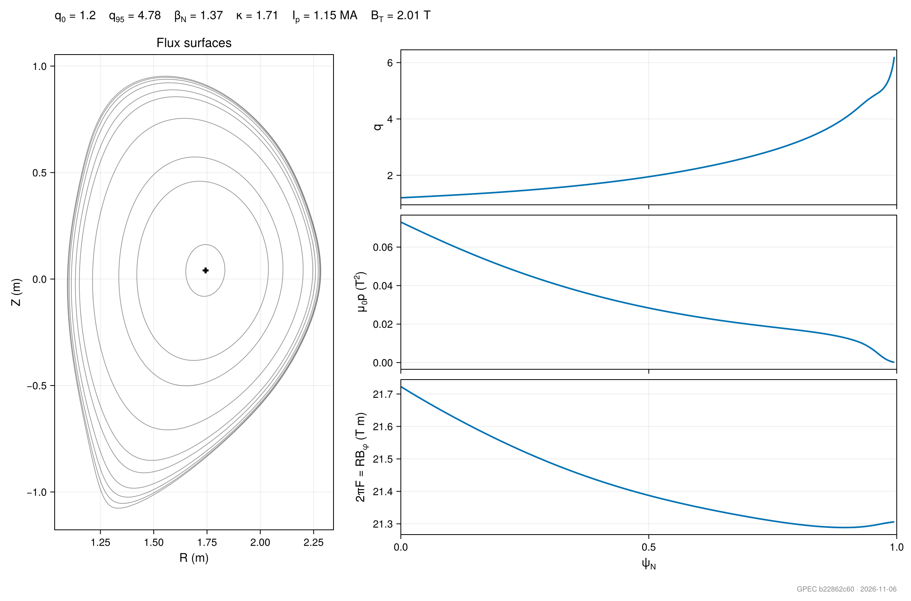
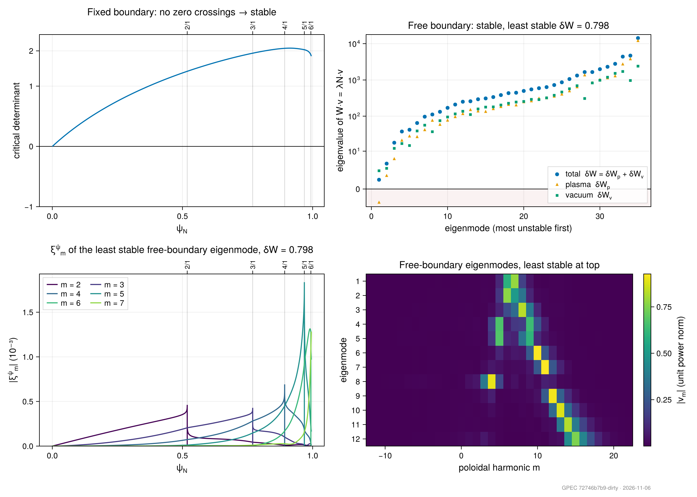
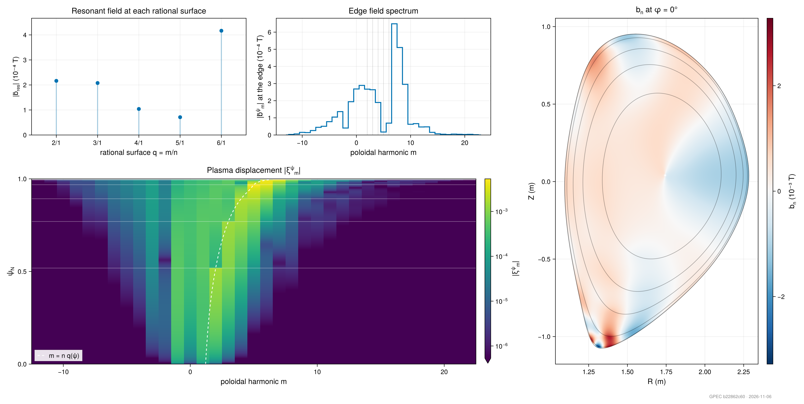
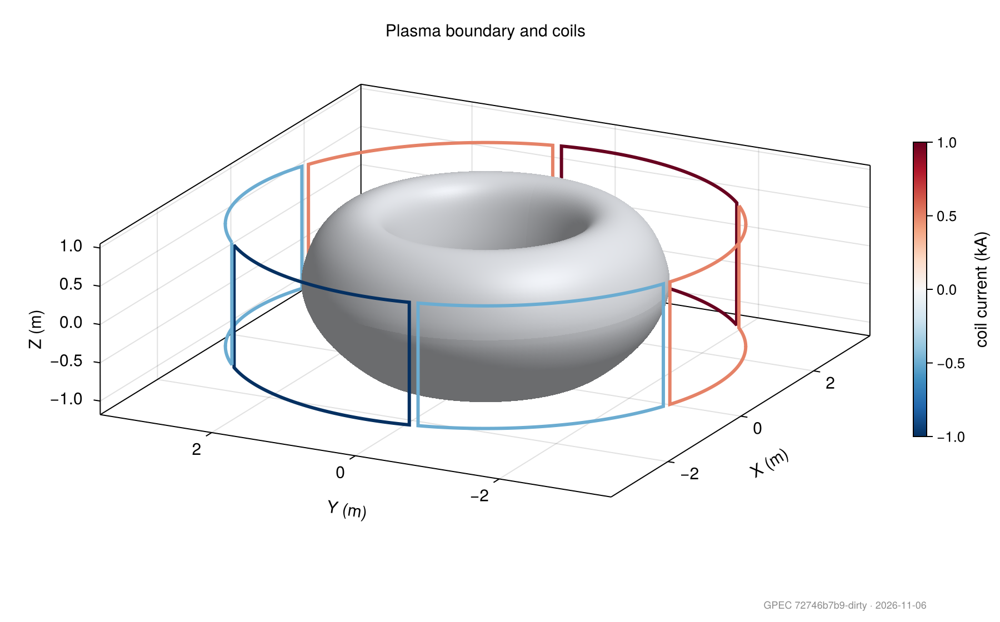

Analysis
Analysis holds the plotting and post-processing functions for GPEC results, grouped by the stage they read. Each registered plot takes the in-memory result or the path of the gpec.h5 it was saved to; available_plots lists them with what each source can draw (see Plotting a result).
Submodules
ForceFreeStates: the eigenmode energies, thecritscan and the displacement profiles of a stability solveEquilibrium: flux surfaces, profiles and the radial grid of an equilibriumCoilForcing: coil geometry and the normal-field spectra it drivesPerturbedEquilibrium: the plasma response, the resonant fields, island widths and Chirikov parameter against ψ_N or qPerturbedEquilibriumModes: helpers that convert the modal output to (ψ, θ) and (ψ, θ, φ) grids for real-space plotsErrorFields: coil sensitivities, tolerance distributions, locking risk and correction limits (see Error Fields)
examples/DIIID-like_ideal_example/analyze_example.jl, examples/Solovev_ideal_example/analyze_example.jl and examples/DIIID-like_error_field_example/analyze_example.jl are worked examples of each; the s–α maps of local stability use salpha_reference, compute_ballooning_stability! and scan_delta_prime_map. write_imas on the Utilities page exports results to an IMAS data dictionary.
Drawing
The plots are drawn with Makie, which GPEC loads only when a session loads a Makie backend. Load one alongside GPEC, from your own or the global environment:
using GeneralizedPerturbedEquilibrium, CairoMakie # files: PNG, PDF, SVG
using GeneralizedPerturbedEquilibrium, GLMakie # interactive windows that zoom, pan and rotateEvery plot returns a Makie Figure, and save_path saves it with the loaded backend (GLMakie writes PNG only). Without a backend a plot throws an ArgumentError saying which to load.
The summary figures of a DIII-D-like run (examples/DIIID-like_ideal_example):




GeneralizedPerturbedEquilibrium.Analysis — Module
AnalysisPost-processing and visualization utilities for GPEC simulation outputs.
Every registered plot takes a result in memory or the path of the gpec.h5 it was saved to, and throws an ArgumentError naming what to change in the run when that source lacks the data it draws. available_plots(src) lists the plots for a result, a path, or the named tuple main returns. Every plot is exported here and from the package, so plot_qprofile(eq) needs no module prefix.
Submodules
ForceFreeStates: Plotting functions for ForceFreeStates (DCON-style ideal MHD stability) resultsEquilibrium: Plotting functions for equilibrium profiles and flux surfacesCoilForcing: Plotting functions for coil forcing spectraPerturbedEquilibrium: Plotting functions for perturbed equilibrium and singular coupling resultsPerturbedEquilibriumModes: Data helpers to convert modal GPEC output to (ψ, θ) and (ψ, θ, φ) gridsErrorFields: Plotting functions for the error-field assessment (coil sensitivities, tolerance Monte Carlo, locking risk, phasing maps)
Plot registry
GeneralizedPerturbedEquilibrium.Analysis.REASONS — Constant
What each capability needs, worded as what to change in the run to get it.
GeneralizedPerturbedEquilibrium.Analysis.PlotCatalog — Type
PlotCatalogThe plots registered for a source, from available_plots: one section per result, each listing the plots that accept it, paired with the capabilities it lacks for them (none when it can draw them).
GeneralizedPerturbedEquilibrium.Analysis.PlotEntry — Type
PlotEntryA registered plot.
Fields
fn::Function- The plotting function.sources::Tuple- The types it accepts as its first argument;AbstractStringmeans agpec.h5path.needs::Tuple{Vararg{Symbol}}- The capabilities (seecapabilities) a source must have for it to draw.description::String- One line on what it draws.any_of::Tuple- For a summary, the capabilities of each of its panels: it draws when a source has every capability of at least one panel, and is empty for a single plot.
GeneralizedPerturbedEquilibrium.Analysis._require — Method
_require(fn, src)Throw an ArgumentError naming what the run must change when src lacks a capability that plot fn needs.
GeneralizedPerturbedEquilibrium.Analysis.available_plots — Method
available_plots(src) -> PlotCatalogThe registered plots for src with whether each can draw from it, and the reason when it cannot. src is a result in memory, a gpec.h5 path, or the named tuple main returns (one section per stage result). Every listed function takes src as its first argument.
GeneralizedPerturbedEquilibrium.Analysis.capabilities — Function
capabilities(src) -> Set{Symbol}The data products src holds, by the names plots declare in their needs: a result in memory, or a gpec.h5 path (a dataset counts when present and non-empty). See REASONS for what each name means.
GeneralizedPerturbedEquilibrium.Analysis.plot_counts — Method
plot_counts(src) -> (available, total)How many registered plots accept src, and how many of those it can draw.
ForceFreeStates
GeneralizedPerturbedEquilibrium.Analysis.ForceFreeStates — Module
ForceFreeStatesPost-processing and visualization functions for ForceFreeStates (DCON-style ideal MHD stability) results. Each plot takes the ForceFreeStatesResult in memory or the path of a gpec.h5 it was saved to, and throws an ArgumentError naming what to change in the run when the source lacks the data it draws (see Analysis.available_plots).
GeneralizedPerturbedEquilibrium.Analysis.ForceFreeStates.plot_ballooning_alpha_boundaries — Method
plot_ballooning_alpha_boundaries(bnd; psi_min=0.0, save_path=nothing)
plot_ballooning_alpha_boundaries(bnd, dpmap; psi_min=0.0, save_path=nothing)Plot the infinite-n ballooning diagram with the first and second stability boundaries; with dpmap, over a map of Δ′ signed so that positive is stable on every surface, with its zero contour.
Arguments
bnd: The named tupleLocalStability.ballooning_alpha_boundariesreturnsdpmap: The named tupleLocalStability.ballooning_delta_prime_mapreturns
Keyword arguments
psi_min: Lower ψ_N limit (default:0.0)save_path: If given, save the figure to this path (default:nothing)
Returns
A Makie Figure.
GeneralizedPerturbedEquilibrium.Analysis.ForceFreeStates.plot_ballooning_alpha_boundary — Method
plot_ballooning_alpha_boundary(src; psi_min=0.0, save_path=nothing)Plot the infinite-n ballooning diagram: the equilibrium pressure gradient α and its first stability boundary against ψ_N, with the unstable surfaces shaded.
Arguments
src: ALocalStabilityResult, or the path of agpec.h5written with a[LocalStability]section
Keyword arguments
psi_min: Lower ψ_N limit, e.g.0.9for the pedestal (default:0.0)save_path: If given, save the figure to this path (default:nothing)
Returns
A Makie Figure.
GeneralizedPerturbedEquilibrium.Analysis.ForceFreeStates.plot_cond_fbar — Method
plot_cond_fbar(src; save_path=nothing)Plot cond(F̄) against ψ_N from the kinetic singular-surface scan, with the threshold, the rational surfaces and any accepted kinetic singular surfaces marked.
Arguments
src: A kineticForceFreeStatesResult, or the path of agpec.h5it was saved to
Keyword arguments
save_path: If given, save the figure to this path (default:nothing)
Returns
A Makie Figure.
GeneralizedPerturbedEquilibrium.Analysis.ForceFreeStates.plot_critical_determinant — Method
plot_critical_determinant(src; save_path=nothing)Plot the critical determinant against ψ_N on a signed pseudo-log axis, titled with its zero crossings (none means fixed-boundary stable).
Arguments
src: A Forward or RiccatiForceFreeStatesResult, or the path of agpec.h5it was saved to
Keyword arguments
save_path: If given, save the figure to this path (default:nothing)
Returns
A Makie Figure.
GeneralizedPerturbedEquilibrium.Analysis.ForceFreeStates.plot_delta_coil — Method
plot_delta_coil(src; part=:real, save_path=nothing)Plot Δ_coil, the response at each side of each rational surface to a unit source on each edge poloidal harmonic, as a heatmap.
Arguments
src: A RiccatiForceFreeStatesResultor a Galerkin one solved withrpec_flag = true, or the path of agpec.h5it was saved to
Keyword arguments
part::real(default, diverging symmetric-log colours),:imag, or:abs(log colours)save_path: If given, save the figure to this path (default:nothing)
Returns
A Makie Figure.
GeneralizedPerturbedEquilibrium.Analysis.ForceFreeStates.plot_delta_prime — Method
plot_delta_prime(src; part=:real, save_path=nothing)Plot the inter-surface Δ′ matrix (PEST-3 convention, ψ_N-referenced) as a heatmap with each entry written in, rows and columns labelled by rational surface.
Arguments
src: A Riccati or GalerkinForceFreeStatesResult, or the path of agpec.h5it was saved to
Keyword arguments
part::real(default, diverging symmetric-log colours),:imag, or:abs(log colours)save_path: If given, save the figure to this path (default:nothing)
Returns
A Makie Figure.
GeneralizedPerturbedEquilibrium.Analysis.ForceFreeStates.plot_delta_prime_raw — Method
plot_delta_prime_raw(src; part=:real, save_path=nothing)Plot the raw outer-region matching matrix D′ as a heatmap, with the left and right sides of each rational surface grouped under it on both axes.
Arguments
src: A Riccati or GalerkinForceFreeStatesResult, or the path of agpec.h5it was saved to
Keyword arguments
part::real(default, diverging symmetric-log colours),:imag, or:abs(log colours)save_path: If given, save the figure to this path (default:nothing)
Returns
A Makie Figure.
GeneralizedPerturbedEquilibrium.Analysis.ForceFreeStates.plot_edge_stability_scan — Method
plot_edge_stability_scan(src; save_path=nothing)Plot the total, plasma and vacuum free-boundary energies against the edge truncation q, with the chosen truncation marked.
Arguments
src: AForceFreeStatesResultproduced withdW_edge_scan_start < psilim, or the path of agpec.h5it was saved to
Keyword arguments
save_path: If given, save the figure to this path (default:nothing)
Returns
A Makie Figure.
GeneralizedPerturbedEquilibrium.Analysis.ForceFreeStates.plot_eigenvalues — Method
plot_eigenvalues(src; matrix_type=:all, save_path=nothing)Plot the free-boundary energy eigenvalues (the power-normalized pencil W·v = λN·v), most unstable first: the total δW and its plasma and vacuum parts, on a signed pseudo-log axis with the unstable sign shaded.
Arguments
src: AForceFreeStatesResultwith free-boundary energies (vac_flag = true), or the path of agpec.h5it was saved to
Keyword arguments
matrix_type::all(default), or one of:total,:plasma,:vacuumsave_path: If given, save the figure to this path (default:nothing)
Returns
A Makie Figure.
GeneralizedPerturbedEquilibrium.Analysis.ForceFreeStates.plot_energy_eigenvectors — Method
plot_energy_eigenvectors(src; nmodes=12, save_path=nothing)Plot |v_m| of the free-boundary energy eigenvectors (unit power norm) against poloidal harmonic m, least stable at the top.
Arguments
src: AForceFreeStatesResultwith free-boundary energies (vac_flag = true), or the path of agpec.h5it was saved to
Keyword arguments
nmodes: Number of eigenmodes drawn (default: 12)save_path: If given, save the figure to this path (default:nothing)
Returns
A Makie Figure.
GeneralizedPerturbedEquilibrium.Analysis.ForceFreeStates.plot_ffs_summary — Method
plot_ffs_summary(src; save_path=nothing)Plot the stability panels the source supplies, two per row: the critical determinant, the free-boundary energies, the least stable mode's displacement, Δ′_ii at each rational surface, and the energy eigenvectors.
Arguments
src: AForceFreeStatesResult, or the path of agpec.h5it was saved to
Keyword arguments
save_path: If given, save the figure to this path (default:nothing)
Returns
A Makie Figure. Throws an ArgumentError naming every missing capability when no panel can be drawn.
GeneralizedPerturbedEquilibrium.Analysis.ForceFreeStates.plot_mode_displacement — Method
plot_mode_displacement(src; modes=nothing, save_path=nothing)Plot |ξ^ψm| against ψN for the least stable free-boundary eigenmode, one curve per harmonic, with the rational surfaces labelled along the top.
Arguments
src: AForceFreeStatesResultwith stored ξ profiles, or the path of agpec.h5it was saved to
Keyword arguments
modes: The m values to draw (default:nothing, the six largest)save_path: If given, save the figure to this path (default:nothing)
Returns
A Makie Figure.
Equilibrium
GeneralizedPerturbedEquilibrium.Analysis.Equilibrium — Module
EquilibriumPost-processing and visualization functions for GPEC equilibria. Each plot takes a PlasmaEquilibrium, a ForceFreeStatesResult (which adds its rational surfaces as markers), or the path of a gpec.h5.
GeneralizedPerturbedEquilibrium.Analysis.Equilibrium.plot_equilibrium_summary — Method
plot_equilibrium_summary(src; n=1, save_path=nothing)Plot the equilibrium's headline scalars, its flux surfaces in (R, Z), and q, μ₀p and 2πF against a shared ψ_N axis.
Arguments
src: APlasmaEquilibrium, aForceFreeStatesResult, or the path of agpec.h5
Keyword arguments
n: Toroidal mode number whose rational surfaces q = m/n are marked on a bare equilibrium (default:1); a stability result orgpec.h5marks the surfaces it solved forsave_path: If given, save the figure to this path (default:nothing)
Returns
A Makie Figure.
GeneralizedPerturbedEquilibrium.Analysis.Equilibrium.plot_f_profile — Method
plot_f_profile(src; n=1, save_path=nothing)Plot 2πF = RBφ against ψN, with the rational surfaces labelled along the top.
Arguments
src: APlasmaEquilibrium, aForceFreeStatesResult, or the path of agpec.h5
Keyword arguments
n: Toroidal mode number whose rational surfaces q = m/n are marked on a bare equilibrium (default:1); a stability result orgpec.h5marks the surfaces it solved forsave_path: If given, save the figure to this path (default:nothing)
Returns
A Makie Figure.
GeneralizedPerturbedEquilibrium.Analysis.Equilibrium.plot_flux_surfaces — Method
plot_flux_surfaces(src; n_psi=11, n_theta=18, n=1, save_path=nothing)Plot flux surfaces and constant-θ spokes in (R, Z) at equal aspect, with the rational surfaces in colour.
Arguments
src: APlasmaEquilibrium, aForceFreeStatesResult, or the path of agpec.h5
Keyword arguments
n_psi: Number of flux surfaces drawn (default: 11)n_theta: Number of constant-θ spokes drawn (default: 18)n: Toroidal mode number whose rational surfaces q = m/n are marked on a bare equilibrium (default:1); a stability result orgpec.h5marks the surfaces it solved forsave_path: If given, save the figure to this path (default:nothing)
Returns
A Makie Figure.
GeneralizedPerturbedEquilibrium.Analysis.Equilibrium.plot_gse — Method
plot_gse(gse; n_theta_lines=8, save_path=nothing)Plot the Grad-Shafranov residual against ψ_N on several θ slices, with the θ-integrated residual as a thick line. Not registered: the equilibrium does not store its residual yet.
Arguments
gse: The named tupleEquilibrium.equilibrium_gse!returns
Keyword arguments
n_theta_lines: Number of θ slices drawn (default: 8)save_path: If given, save the figure to this path (default:nothing)
Returns
A Makie Figure.
GeneralizedPerturbedEquilibrium.Analysis.Equilibrium.plot_pressure_profile — Method
plot_pressure_profile(src; n=1, save_path=nothing)Plot μ₀p against ψ_N, with the rational surfaces labelled along the top.
Arguments
src: APlasmaEquilibrium, aForceFreeStatesResult, or the path of agpec.h5
Keyword arguments
n: Toroidal mode number whose rational surfaces q = m/n are marked on a bare equilibrium (default:1); a stability result orgpec.h5marks the surfaces it solved forsave_path: If given, save the figure to this path (default:nothing)
Returns
A Makie Figure.
GeneralizedPerturbedEquilibrium.Analysis.Equilibrium.plot_qprofile — Method
plot_qprofile(src; show_singular=true, n=1, save_path=nothing)Plot the safety factor q against ψ_N, with q₀ and q₉₅ marked and the rational surfaces labelled along the top.
Arguments
src: APlasmaEquilibrium, aForceFreeStatesResult, or the path of agpec.h5
Keyword arguments
show_singular: Mark the rational surfaces (default:true)n: Toroidal mode number whose rational surfaces q = m/n are marked on a bare equilibrium (default:1); a stability result orgpec.h5marks the surfaces it solved forsave_path: If given, save the figure to this path (default:nothing)
Returns
A Makie Figure.
CoilForcing
GeneralizedPerturbedEquilibrium.Analysis.CoilForcing — Module
CoilForcingCoil geometry and fields on the plasma control surface: the coils in 3D and in (R, Z), the forcing spectrum, normal field maps in (φ, θ), and the 3D boundary coloured by any control-surface field. Coils are coloured on the same diverging map as the normal field they drive, so a positive current reads as positive b_n beneath the coil.
GeneralizedPerturbedEquilibrium.Analysis.CoilForcing.control_surface_scalar — Method
control_surface_scalar(equil, modes, n; mtheta=180, nphi=180, psi=nothing,
helicity=nothing) -> Matrix{Float64}Inverse-Fourier-transform a spectral control-surface quantity into a real-space [mtheta, nphi] field on the plasma boundary, ready to colour plot_surface_3d.
modes are complex Fourier amplitudes indexed by poloidal mode m for a single toroidal mode n — a Vector{ForcingMode} (filtered to n) or a (m_vals, amplitudes) tuple. The quantity is arbitrary (e.g. applied normal field b_n_x, total b_n, displacement xi_n); the caller supplies whichever modes they want to view.
The transform inverts the SFL Fourier decomposition used by ForcingTerms.fourier_decompose_bn: f(θ) = Σ_m amp_m e^{i m θ}, the per-θ correction e^{i n ν(ψ,θ)} from equil.rzphi_nu, then the toroidal extension in the machine angle c(θ,φ) = -Re[f(θ) e^{i n·hel·φ}]. The e^{i n·hel·φ} follows from the SFL→machine map φ = -hel(2π ζ + ν) (ζ the SFL toroidal angle the modes were decomposed against); substituting 2π ζ = -hel·φ - ν is what turns the decomposition's ζ exponential into the ν correction times e^{i n·hel·φ}.
The reconstruction tracks the source coil toroidally (the field lobe sits at the coil's φ), carried by helicity = sign(Bt)·sign(Ip) in e^{i n·hel·φ} (equil.rzphi_nu/equil.params). The leading - is a display orientation so that a positive coil current reads as a positive b_n_x lobe beneath it — GPEC's outward-normal flux is intrinsically negative there, so the overall sign is the coil↔surface colour convention while the spatial structure and magnitude are physical. Pass helicity to override sign(Bt)·sign(Ip) if the toroidal tracking is wrong for your machine.
The field is reconstructed only from the supplied m modes, so it is band-limited to that poloidal range. A source placed within ~one grid cell of the surface makes the field near-singular and the truncated series rings (Gibbs oscillation — e.g. a spurious dip where a single lobe is expected). Keep coils at a realistic standoff from the boundary, or widen the m range, for a clean reconstruction.
Keyword arguments
mtheta,nphi: poloidal/toroidal grid resolutionpsi: flux surface (defaultequil.rzphi_xs[end], the boundary)helicity: overridesign(Bt)·sign(Ip)
GeneralizedPerturbedEquilibrium.Analysis.CoilForcing.plot_bn_contour — Method
plot_bn_contour(pe; coils=false, save_path=nothing)
plot_bn_contour(bn, mtheta, nzeta; n=nothing, save_path=nothing)Plot the applied normal field b_n on the control surface, toroidal angle φ against poloidal angle θ (0 at the outboard midplane), optionally with the coil conductors projected onto it; or a raw Biot–Savart B·n̂ grid in tesla.
Arguments
pe: APerturbedEquilibriumStatewith a forcingbn: Normal field[mtheta, nzeta]on the boundary grid
Keyword arguments
coils: Draw the coil conductors projected onto the map (default:false)n: Toroidal mode number named in the title (default:nothing)save_path: If given, save the figure to this path (default:nothing)
Returns
A Makie Figure.
GeneralizedPerturbedEquilibrium.Analysis.CoilForcing.plot_coil_geometry_3d — Method
plot_coil_geometry_3d(coil_sets; equil=nothing, save_path=nothing)
plot_coil_geometry_3d(pe; save_path=nothing)Plot the coil conductors in 3D at equal data aspect, coloured by current, with the plasma boundary as an opaque surface when an equilibrium is given. Use GLMakie to rotate it.
Arguments
coil_sets:Vector{CoilSet}fromForcingTerms.load_coil_setspe: APerturbedEquilibriumStateforced by coils, drawn with its boundary
Keyword arguments
equil: APlasmaEquilibriumwhose boundary is drawn (default:nothing)save_path: If given, save the figure to this path (default:nothing)
Returns
A Makie Figure.
GeneralizedPerturbedEquilibrium.Analysis.CoilForcing.plot_coil_geometry_rz — Method
plot_coil_geometry_rz(coil_sets; equil=nothing, psi=nothing, save_path=nothing)
plot_coil_geometry_rz(pe; save_path=nothing)Plot the coils in the (R, Z) plane, each set labelled beside itself, over the plasma boundary when an equilibrium is given. A single toroidal loop is a point in (R, Z) and is drawn as a marker.
Arguments
coil_sets:Vector{CoilSet}fromForcingTerms.load_coil_setspe: APerturbedEquilibriumStateforced by coils, drawn with its boundary
Keyword arguments
equil: APlasmaEquilibriumwhose boundary is drawn (default:nothing)psi: The flux surface drawn as the boundary (default: the outermost grid surface)save_path: If given, save the figure to this path (default:nothing)
Returns
A Makie Figure.
GeneralizedPerturbedEquilibrium.Analysis.CoilForcing.plot_control_surface — Method
plot_control_surface(src, v; weighting=:root_area, n=nothing, label="the given spectrum", arb=false, coils=false,
save_path=nothing)Plot any control-surface spectrum, such as a forcing, a response or an eigenvector, as the bare normal field b_n on the control surface: toroidal angle φ against poloidal angle θ (0 at the outboard midplane).
Arguments
src: APlasmaResponsesupplying the control-surface operators and geometry, or aPerturbedEquilibriumState, whose coils can also be drawnv: The spectrum, one entry per control-surface harmonic
Keyword arguments
weighting: Howvis stored::root_area(b̃, default),:area(b̄) or:bare(b)n: Toroidal mode number drawn (default: the first)label: The source named in the title, e.g."the applied forcing"arb: Label the colour scale in arbitrary units, for a normalized vector (default:false, tesla)coils: Draw the coil conductors projected onto the map (default:false)save_path: If given, save the figure to this path (default:nothing)
Returns
A Makie Figure.
GeneralizedPerturbedEquilibrium.Analysis.CoilForcing.plot_mode_spectrum — Method
plot_mode_spectrum(forcing_modes; mlow=nothing, mhigh=nothing, rational_m=Int[], save_path=nothing)
plot_mode_spectrum(pe; save_path=nothing)Plot the forcing spectrum |Φ_x(m, n)| against poloidal harmonic m as step lines, one per toroidal mode number.
Arguments
forcing_modes:Vector{ForcingMode}fromcompute_coil_forcing_modes!pe: APerturbedEquilibriumState, drawn across its poloidal range with its resonant harmonics marked
Keyword arguments
mlow,mhigh: Poloidal range of the x axis (default: the modes' own range)rational_m: Resonant harmonics to mark (default: none)save_path: If given, save the figure to this path (default:nothing)
Returns
A Makie Figure.
GeneralizedPerturbedEquilibrium.Analysis.CoilForcing.plot_sources — Method
plot_sources(rmp; n=1, color=:current, save_path=nothing)Plot the coils of an RMPField in 3D at equal data aspect, with no plasma: every coil term of a sum together, each term's currents scaled by its weight. Mode-table and spectrum terms have no geometry and are counted in the title. Use GLMakie to rotate it.
Arguments
rmp: AnRMPFieldwith at least one coil term
Keyword arguments
n: Toroidal mode number that sets the n-modulated tilts (default:1)color::currentcolours each conductor by its current in kA,:setgives each coil set its own colour (default::current)save_path: If given, save the figure to this path (default:nothing)
Returns
A Makie Figure.
GeneralizedPerturbedEquilibrium.Analysis.CoilForcing.plot_surface_3d — Method
plot_surface_3d(equil; color_by=nothing, coil_sets=nothing, mtheta=180, nphi=180, psi=nothing, clim=nothing,
label="", title="Plasma boundary", save_path=nothing)
plot_surface_3d(equil, modes, n; coil_sets=nothing, mtheta=180, nphi=180, psi=nothing, helicity=nothing,
label="", save_path=nothing)Plot the 3D plasma boundary at equal data aspect, unlit and coloured by a control-surface field on a diverging map, with coils coloured by current on the same map. Use GLMakie to rotate it. The second form colours the surface by control_surface_scalar.
Keyword arguments
color_by: A real[mtheta, nphi]field on the surface (default:nothing, an uncoloured surface)coil_sets: Coils drawn with the surface (default:nothing)mtheta,nphi,psi: Surface grid and flux surface; must matchcolor_byclim: Symmetric colour limit (default: the field's largest magnitude)label: Colour-bar label of the fieldsave_path: If given, save the figure to this path (default:nothing)
Returns
A Makie Figure.
PerturbedEquilibrium
GeneralizedPerturbedEquilibrium.Analysis.PerturbedEquilibrium — Module
PerturbedEquilibriumPost-processing and visualization functions for GPEC perturbed equilibrium results. Each plot takes the PerturbedEquilibriumState in memory or the path of a gpec.h5 it was saved to, and throws an ArgumentError naming what to change in the run when the source lacks the data it draws (see Analysis.available_plots).
GeneralizedPerturbedEquilibrium.Analysis.PerturbedEquilibrium.plot_chirikov_parameter — Method
plot_chirikov_parameter(src; save_path=nothing)Plot the effective island-overlap Chirikov parameter at each rational surface, with the overlap threshold 1 marked.
Arguments
src: APerturbedEquilibriumState, or the path of agpec.h5it was saved to
Keyword arguments
save_path: If given, save the figure to this path (default:nothing)
Returns
A Makie Figure.
GeneralizedPerturbedEquilibrium.Analysis.PerturbedEquilibrium.plot_dominant_mode_surface — Method
plot_dominant_mode_surface(src; mode=1, n=nothing, save_path=nothing)Plot dominant resonant-coupling mode mode, the right singular vector of the resonant coupling matrix, as the normal field it represents on the control surface: toroidal angle φ against poloidal angle θ, in arbitrary units (the vector has unit norm).
Arguments
src: APlasmaResponse, or aPerturbedEquilibriumState(its response's modes)
Keyword arguments
mode: Which dominant mode, 1 the strongest (default:1)n: Toroidal mode number drawn (default: the first)save_path: If given, save the figure to this path (default:nothing)
Returns
A Makie Figure.
GeneralizedPerturbedEquilibrium.Analysis.PerturbedEquilibrium.plot_driven_delta_prime — Method
plot_driven_delta_prime(src; save_path=nothing)Plot the forcing-driven Re Δ′ at each rational surface, the response to the applied forcing; for the equilibrium's own Δ′ of a Riccati or Galerkin solve, see ForceFreeStates.plot_delta_prime.
Arguments
src: APerturbedEquilibriumState, or the path of agpec.h5it was saved to
Keyword arguments
save_path: If given, save the figure to this path (default:nothing)
Returns
A Makie Figure.
GeneralizedPerturbedEquilibrium.Analysis.PerturbedEquilibrium.plot_effective_islands — Method
plot_effective_islands(pe; phi=0.0, save_path=nothing)Plot the island chains the effective resonant flux would open, in (θ, ψN) and on the poloidal plane at toroidal angle φ, with each chain's half-width w/2 (in ψN) listed.
Arguments
pe: APerturbedEquilibriumStatewith the singular coupling
Keyword arguments
phi: Toroidal angle in radians (default:0.0)save_path: If given, save the figure to this path (default:nothing)
Returns
A Makie Figure.
GeneralizedPerturbedEquilibrium.Analysis.PerturbedEquilibrium.plot_island_widths — Method
plot_island_widths(src; save_path=nothing)Plot the island half-width w/2 at each rational surface, in ψ_N.
Arguments
src: APerturbedEquilibriumState, or the path of agpec.h5it was saved to
Keyword arguments
save_path: If given, save the figure to this path (default:nothing)
Returns
A Makie Figure.
GeneralizedPerturbedEquilibrium.Analysis.PerturbedEquilibrium.plot_islands — Method
plot_islands(pe; phi=0.0, save_path=nothing)Plot the island chains of the penetrated field in (θ, ψN) and on the poloidal plane at toroidal angle φ. The half-width scales from the effective one as w² ∝ |b̄|: wpen = weff √(|b̄pen| / |b̄_res|).
Arguments
pe: APerturbedEquilibriumStatefrom a matched run, which carries a penetrated field
Keyword arguments
phi: Toroidal angle in radians (default:0.0)save_path: If given, save the figure to this path (default:nothing)
Returns
A Makie Figure.
GeneralizedPerturbedEquilibrium.Analysis.PerturbedEquilibrium.plot_mode_spectrogram — Method
plot_mode_spectrogram(src; component=:xi_psi, style=:log_heatmap, save_path=nothing)Plot a response component's poloidal harmonics against ψ_N, with the rational surfaces and the resonance m = n q(ψ) marked.
Arguments
src: APerturbedEquilibriumStatewith the reconstructed response, or the path of agpec.h5it was saved to
Keyword arguments
component::xi_psi(ξ^ψ, default),:b_psi(the area-weighted b̄^ψ, in T),:Jb_thetaor:Jb_zeta(J·b^θ and J·b^ζ, in T m²)style::log_heatmap(default),:linear_heatmap, or:lines(the eight largest harmonics)save_path: If given, save the figure to this path (default:nothing)
Returns
A Makie Figure.
GeneralizedPerturbedEquilibrium.Analysis.PerturbedEquilibrium.plot_perturbed_equilibrium_summary — Method
plot_perturbed_equilibrium_summary(src; save_path=nothing)Plot the panels the source supplies: the resonant field at each rational surface, the edge b̄^ψ spectrum, the ξ^ψ spectrogram and, from a state in memory, b_n on the poloidal plane at φ = 0.
Arguments
src: APerturbedEquilibriumState, or the path of agpec.h5it was saved to
Keyword arguments
save_path: If given, save the figure to this path (default:nothing)
Returns
A Makie Figure. Throws an ArgumentError when no panel can be drawn.
GeneralizedPerturbedEquilibrium.Analysis.PerturbedEquilibrium.plot_perturbed_field_rz — Method
plot_perturbed_field_rz(pe; component=:b_n, phi=0.0, deform=false, clip=0.9, save_path=nothing)Plot the perturbed normal field bn or normal displacement ξn on the poloidal plane at toroidal angle φ, drawn on the flux-surface grid with the rational surfaces outlined; with deform, also the boundary displaced along its normal by a scaled ξ_n over the equilibrium outline.
Arguments
pe: APerturbedEquilibriumStatewith the stored normal field and displacement
Keyword arguments
component::b_n(T, default) or:xi_n(m)phi: Toroidal angle in radians (default:0.0)deform: Draw the displaced boundary, scaled so its largest displacement is 5 % of the minor radius (default:false)clip: Quantile of |value| that sets the symmetric colour range; larger values saturate.1shows the full range (default:0.9)save_path: If given, save the figure to this path (default:nothing)
Returns
A Makie Figure.
GeneralizedPerturbedEquilibrium.Analysis.PerturbedEquilibrium.plot_resonant_area_weighted_field — Method
plot_resonant_area_weighted_field(src; save_path=nothing)Plot the resonant coupling at each rational surface in rows sharing a q = m/n axis: the resonant area-weighted field |b̄res|, the resonant current |Ires|, the island half-width w/2, the effective island-overlap Chirikov parameter and the forcing-driven Re Δ′. Toroidal mode numbers are distinguished by colour; the title counts the surfaces with overlapping islands.
Arguments
src: APerturbedEquilibriumState, or the path of agpec.h5it was saved to
Keyword arguments
save_path: If given, save the figure to this path (default:nothing)
Returns
A Makie Figure.
GeneralizedPerturbedEquilibrium.Analysis.PerturbedEquilibrium.plot_resonant_area_weighted_field_amplitude — Method
plot_resonant_area_weighted_field_amplitude(src; save_path=nothing)Plot the resonant area-weighted field |b̄res| = |Φres|/A at each rational surface [Pharr 2026], in tesla, beside the penetrated field |b̄_pen| when the run carries one.
Arguments
src: APerturbedEquilibriumState, or the path of agpec.h5it was saved to
Keyword arguments
save_path: If given, save the figure to this path (default:nothing)
Returns
A Makie Figure.
PerturbedEquilibriumModes
GeneralizedPerturbedEquilibrium.Analysis.PerturbedEquilibriumModes — Module
PerturbedEquilibriumModesPost-processing utilities for converting modal GPEC outputs to theta-space and (theta, phi) grids.
GeneralizedPerturbedEquilibrium.Analysis.PerturbedEquilibriumModes.modes_to_theta — Method
modes_to_theta(h5_file, variable; mtheta=nothing, keep_sfl_phi=true)Convert modal output (npsi, numpert_total) from a gpec.h5 file to theta-space (npsi, mtheta, npert).
Reads all required metadata (mlow, nlow, mpert, npert) and spline data (ν) from the HDF5 file.
Arguments
h5_file::String: Path to gpec.h5 output filevariable::String: HDF5 dataset path, e.g."PerturbedEquilibrium/Response/xi_R"
Keyword arguments
mtheta::Int: theta grid resolution (default:max(2*(|mlow|+mpert), 512))keep_sfl_phi::Bool: iftrue(default), output in SFL toroidal angle; iffalse, applyexp(i*n*ν(ψ,θ))to convert to machine toroidal angle and conjugate ifhelicity > 0(matches Fortrangpout_xbrzphifun)
Returns
theta_data::Array{ComplexF64,3}:[npsi × mtheta × npert]theta_grid::Vector{Float64}:[mtheta]SFL theta ∈ [0, 1)n_vals::Vector{Int}:[npert]toroidal mode numbers
GeneralizedPerturbedEquilibrium.Analysis.PerturbedEquilibriumModes.theta_to_thetaphi — Method
theta_to_thetaphi(theta_data, n_vals; nphi=nothing)Extend theta-space data to a (θ, φ) grid via toroidal inverse DFT.
f(θ, φ) = Σₙ fₙ(θ) exp(i·n·φ)Arguments
theta_data::Array{ComplexF64,3}:[npsi × mtheta × npert]frommodes_to_thetan_vals::Vector{Int}: toroidal mode numbers
Keyword arguments
nphi::Int: toroidal grid points (default:max(4*maximum(abs.(n_vals)), 64))
Returns
full_data::Array{ComplexF64,3}:[npsi × mtheta × nphi]phi_grid::Vector{Float64}:[nphi]in radians ∈ [0, 2π)
ErrorFields
GeneralizedPerturbedEquilibrium.Analysis.ErrorFields — Module
ErrorFieldsPlots for the error-field assessment stored under ErrorFields/ of a GPEC HDF5 output: per-coil sensitivities, the tolerance Monte Carlo distributions, the locking risk and its dependence on tolerance, the threshold scaling, the dominant coupling mode, and coil-array phasing maps. Every plot takes a list of label => h5path pairs so design revisions can be overplotted, with a single-path convenience method for the common case.
GeneralizedPerturbedEquilibrium.Analysis.ErrorFields.SingleSource — Type
A single unlabelled source: a gpec.h5 path, or one in-memory result.
GeneralizedPerturbedEquilibrium.Analysis.ErrorFields.Sources — Type
A label paired with something to plot: a gpec.h5 path, or a result already in memory (ErrorFields.ErrorFieldsResult, SensitivityTable, CoilSensitivities, MonteCarloResult, RiskResult, or a vector of CoilOverlap). Analysing coil geometry that was never part of a run produces the latter, so the plots accept both.
GeneralizedPerturbedEquilibrium.Analysis.ErrorFields._load — Method
The overlap distribution lives on the Monte Carlo result and the penetration threshold on the risk result, so a plot that draws both against each other needs the pair. Pass them together as a tuple rather than separately, which would leave each half unable to find the other.
GeneralizedPerturbedEquilibrium.Analysis.ErrorFields.plot_applied_spectra — Method
plot_applied_spectra(ctx, overlaps; normalize=true, save_path=nothing)
plot_applied_spectra(h5path, coil_sets; normalize=true, save_path=nothing, kwargs...)Plot each coil set's applied spectrum against the dominant resonant mode. normalize = true scales every curve to its own peak, which says whether a coil drives a different part of the spectrum; false keeps the amplitudes, which says whether it simply drives less.
GeneralizedPerturbedEquilibrium.Analysis.ErrorFields.plot_coil_sensitivities — Method
plot_coil_sensitivities(sources; quantity=:shift, coils=nothing, yscale=:identity, save_path=nothing)
plot_coil_sensitivities(source; kwargs...)Plot each coil set's dominant-mode sensitivity as a stem and dot per row, across runs matched by coil set name. quantity is :shift (per millimetre of rigid in-plane shift), :tilt (per degree), :rim (the same tilt as rim displacement, the unit mechanical tolerances arrive in), :as_designed (|δ| as built), or :fraction (the resonant share of the coil's own applied spectrum, 100·|δ|·B_T0/‖b̃‖ in percent). coils restricts and orders the coil sets shown; a name a source does not carry is an error. yscale = :log10 puts the values on a log axis. Coil sets whose value is roundoff (an axisymmetric coil has no n ≠ 0 field) are left out and counted in the title.
Each source is a gpec.h5 path, an ErrorFieldsResult, a SensitivityTable, or a vector of CoilOverlap (:as_designed and :fraction only). :fraction needs the applied field as well as the overlap, so it is not available from a SensitivityTable.
GeneralizedPerturbedEquilibrium.Analysis.ErrorFields.plot_correction_requirement — Method
plot_correction_requirement(req::EF.CorrectionRequirement; save_path=nothing)
plot_correction_requirement(h5path, source_name, array_names; save_path=nothing, kwargs...)Plot an ErrorFields.correction_requirement: the resonant field on each rational surface before correction, after each array's dominant-mode correction alone and after the joint least-squares correction, as stems on a log axis; then one polar panel per array with the complex current it needs as a phasor (kilo-ampere-turns, or a factor on the array's current as given when any array's ampere-turns are unknown): the solo dominant-mode factor, the minimum-current member of the set's dominant-mode family, and the joint least-squares factor.
GeneralizedPerturbedEquilibrium.Analysis.ErrorFields.plot_dominant_mode_spectrum — Method
plot_dominant_mode_spectrum(sources; modes=1:3, save_path=nothing)
plot_dominant_mode_spectrum(source; kwargs...)Plot the right singular vectors of the dominant resonant-coupling modes, |V[m, k]| against poloidal harmonic m for each mode k in modes (one step line per toroidal mode number), labelled with their singular values.
GeneralizedPerturbedEquilibrium.Analysis.ErrorFields.plot_efc_ntv_limits — Method
plot_efc_ntv_limits(h5path; torque_budget, delta_threshold=nothing, safety_factor=1.0, delta_max=15, profiles=false, save_path=nothing)
plot_efc_ntv_limits(couplings::Vector{EF.EFCCoupling}; delta_threshold, torque_budget, kwargs...)Plot the correction current against intrinsic overlap for each correction array (ErrorFields/NTV/): the single-mode current and the NTV-limited current whose residual torque lowers the threshold, with the largest correctable overlap marked and the zero-rotation limits as points (residual torque: circle, whole field: star). When the run tabulated the torques against rotation, a second panel shows those tables with the reference rotation; with profiles, a third the torque integrated from the axis at zero rotation shift. Nonzero torque_rtol or budget_rtol shade the band between the pessimistic and optimistic curves. delta_threshold defaults to the run's fitted penetration threshold; torque_budget is the torque, N·m, that would bring the reference rotation to rest.
GeneralizedPerturbedEquilibrium.Analysis.ErrorFields.plot_error_field_summary — Method
plot_error_field_summary(src; save_path=nothing)Plot the panels of a run's error-field assessment it supplies: the overlap distribution against the threshold's CDF, titled with the locking probability; the locking risk against tolerance scale, titled with the allowable scale for 1 % risk; and the coil sets' shift sensitivity. src is an ErrorFields.ErrorFieldsResult or the path of a gpec.h5 it was saved to.
GeneralizedPerturbedEquilibrium.Analysis.ErrorFields.plot_linearity_check — Method
plot_linearity_check(check::EF.LinearityCheck; save_path=nothing)
plot_linearity_check(h5path; scales=(1.0, 2.0), save_path=nothing, kwargs...)Plot the relative error of the linear sensitivity model at finite displacements, from ErrorFields.linearity_check: one stem per row on a log axis, grouped by coil set or coherent group, shift and tilt told apart by colour and the scale by marker, with the 1 % level marked. A row whose linear change vanishes has no relative error and is not drawn.
GeneralizedPerturbedEquilibrium.Analysis.ErrorFields.plot_linearity_residuals — Method
plot_linearity_residuals(sources; at=:tolerance, coils=nothing, tolerances=nothing, fd_step_shift_m=nothing, fd_step_tilt_deg=nothing, yscale=:log10, save_path=nothing)
plot_linearity_residuals(source; kwargs...)Plot how linear each coil set's field is in its rigid motions: for the six taps (shift and tilt about x, y, z) the ratio of the central second difference to the largest first difference among the set's taps, as stored in ErrorFields/CoilSensitivities/*_linearity_residual. at = :step shows it at the finite-difference steps; at = :tolerance rescales each tap by tolerance / step to the coil's own tolerance range. Tolerances come from the file's snapshot or tolerances; steps from the recorded deck or fd_step_shift_m and fd_step_tilt_deg. The 1 % level at which the sensitivity calculation warns is marked. One panel per source, on a log axis unless yscale = :identity.
GeneralizedPerturbedEquilibrium.Analysis.ErrorFields.plot_locking_risk — Method
plot_locking_risk(sources; corrected=true, target_percent=nothing, save_path=nothing)
plot_locking_risk(source; kwargs...)Plot the locking probability against tolerance scale from each run's ErrorFields/Risk/ToleranceScan/, intrinsic and (when corrected) with error-field correction, with the batch spread as error bars. With target_percent the target is marked and the title gives the allowable scale where the scan reaches it.
GeneralizedPerturbedEquilibrium.Analysis.ErrorFields.plot_needed_current — Method
plot_needed_current(mc, array::EF.CoilOverlap; coupling=nothing, delta_threshold=nothing, torque_budget=nothing, save_path=nothing)Plot the distribution of the current array needs to cancel each sampled machine's dominant-mode overlap (ErrorFields.needed_current_distribution), in kilo-ampere-turns when the array's ampere-turns are known, with the as-designed value marked; with the array's EFCCoupling, the threshold and the torque budget, also the NTV-limited correctable current and the fraction of samples beyond it (ErrorFields.uncorrectable_probability).
GeneralizedPerturbedEquilibrium.Analysis.ErrorFields.plot_overlap_contributions — Method
plot_overlap_contributions(ctx, overlaps; save_path=nothing)
plot_overlap_contributions(h5path, coil_sets; save_path=nothing, kwargs...)Plot which poloidal harmonics produce each coil set's overlap, conj(V[m])·b̃[m] rotated so the coil's own total is real; each coil's steps sum to its resonant fraction, given in the legend. It separates a coil that drives the resonant harmonics weakly from one that drives them strongly and cancels against itself.
GeneralizedPerturbedEquilibrium.Analysis.ErrorFields.plot_overlap_phasors — Method
plot_overlap_phasors(sources; coils=nothing, save_path=nothing)
plot_overlap_phasors(source; kwargs...)Plot each error-field coil set's as-built dominant-mode overlap δ as an arrow in the complex plane, laid head to tail so the walk ends at the run's total, rotated so the total is real: an arrow along it adds to the error field, one against it cancels part of another coil's. One panel per source, since the mode phase is arbitrary between runs. The NTV correction arrays and coil sets with no as-designed n ≠ 0 field are left out; throws when no coil set has one. On a file the walk's end is checked against the stored Monte Carlo delta_as_designed.
GeneralizedPerturbedEquilibrium.Analysis.ErrorFields.plot_phasing_map — Method
plot_phasing_map(h5path, coil_names; psi_low=0.0, psi_high=CORE_PSI_HIGH, mode=1, nphase=180, quantity=:delta_per_kat, save_path=nothing)
plot_phasing_map(map::EF.PhasingMap; quantity=:delta_per_kat, save_path=nothing)Plot the dominant-mode overlap per kilo-ampere-turn (:delta_per_kat) or the resonant fraction of the applied field (:resonant_fraction_percent) against the relative toroidal phases of two or three coil arrays (EF.phasing_map): a line for two arrays, a filled contour with the extreme marked for three.
GeneralizedPerturbedEquilibrium.Analysis.ErrorFields.plot_surface_overlay — Method
plot_surface_overlay(ctx, overlaps; ntheta=256, nzeta=180, top=4, save_path=nothing)
plot_surface_overlay(h5path, coil_sets; save_path=nothing, kwargs...)Plot the applied normal field on the control surface of the top coil sets with the largest overlap, each scaled to its own peak, with contours of the dominant resonant mode over it: a coil driving a different poloidal region from the one the dominant mode occupies couples poorly however strong it is. Toroidal angle φ against poloidal angle θ, with the outboard midplane at θ = 0.
GeneralizedPerturbedEquilibrium.Analysis.ErrorFields.plot_threshold_scaling — Method
plot_threshold_scaling(sources; save_path=nothing)
plot_threshold_scaling(source; kwargs...)Plot each run's overlap distributions against the penetration threshold on a log |δ| axis: the threshold as its cumulative distribution P(lock | δ) on a 0–1 right axis, with the nominal threshold (the fit at the central exponents, the CDF's median) marked. The CDF is rebuilt from the recorded scaling and scenario when the source records them, and otherwise drawn from the stored values on the Monte Carlo bins. A source needs the overlap distribution and the threshold together; pass a (MonteCarloResult, RiskResult) tuple for results in memory.
GeneralizedPerturbedEquilibrium.Analysis.ErrorFields.plot_tolerance_budget — Method
plot_tolerance_budget(h5path; psi_low=0.0, psi_high=CORE_PSI_HIGH, mode=1, tolerance_scale=1.0, sort=:total, top=nothing, save_path=nothing)
plot_tolerance_budget(table, tolerances, coil_sets; monte_carlo=nothing, kwargs...)
plot_tolerance_budget(terms::NamedTuple; monte_carlo=nothing, sort=:total, top=nothing, save_path=nothing)Plot the worst-case tolerance budget as stacked horizontal bars, one per coil set, coherent group and the unattributed budget: the as-designed |δ|, the shift term and the tilt term of ErrorFields.worst_case_terms, which sum to the abs_delta_worst_case the Monte Carlo sizes its histogram by. sort orders the bars by :total (largest at the top), :name, or :none; top keeps only that many largest. With a Monte Carlo result the sample mean of |δ| and the as-designed total are marked.
GeneralizedPerturbedEquilibrium.Analysis.ErrorFields.plot_tolerance_pdf — Method
plot_tolerance_pdf(sources; corrected=true, normalize=false, xscale=:identity, show_batches=false, save_path=nothing)
plot_tolerance_pdf(source; kwargs...)Plot the Monte Carlo distributions of the dominant-mode overlap |δ| of each run, intrinsic and (when corrected) with error-field correction, with the as-designed overlap marked unless it is roundoff. show_batches draws each batch's intrinsic histogram faintly under the mean, the sampling noise a risk figure inherits.